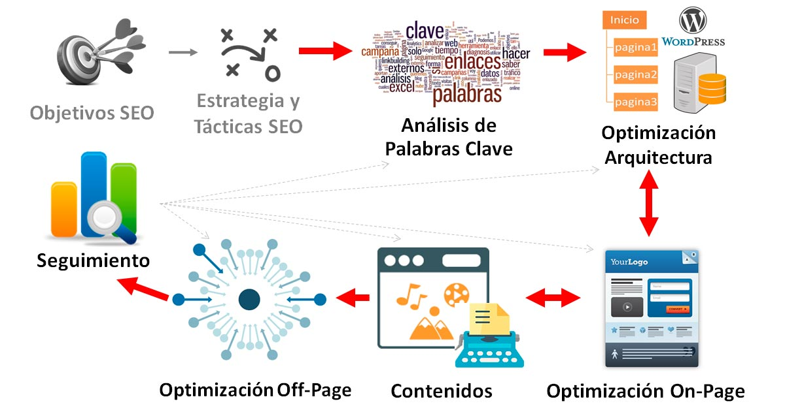

- Introducción
- Importancia del SEO
- Uso de etiquetas en SEO
- Concluciones
1. Introducción al SEO
El SEO (Search Engine Optimization) es un conjunto de prácticas destinadas amejorar la visibilidad de un sitio web en los motores de búsqueda como Google
2. Importacia del SEO
La optimización para motores de búsqueda es crucial
- Importancia de la visibilidad
- Atraer tráfico orgánico y relevante.
- Mejorar la experiencia de usuario.
- Posicionarse frente a la competencia.
3. Uso de Etiquetas en SEO
El etiquetado en HTML desempeña un papel esencial en el SEO,

4. Conclusiones
En resumen, una estrategia de SEO bien implementada, que incluye el uso adecuado de etiquetas HTML, es esencial para alcanzar el éxito en línea y mejorar la visibilidad de tu sitio web en los resultados de búsqueda.